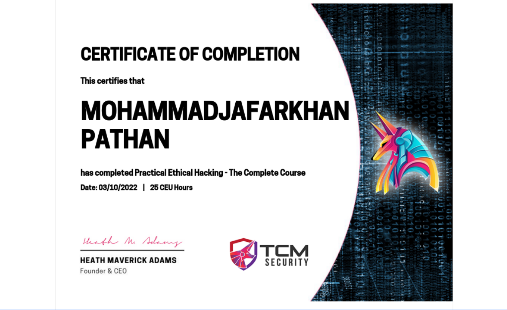

Course Review - Practical Ethical Hakcking by TCM Security
Date: 2022-11-03
Author: Jafar Pathan
Read Time: 10 Min
Just completed the Practical Ethical Hacking - The Complete Course offered by TCM Security instructed by Heath Adams AKA The Cyber Mentor.

Let's talk from beginning, getting into cyber security is not easy if right resources is not available. Finding right resources is like walk in the dark. Available options are overwhelming, picking the right one is difficult task. And I am glad to tell that a while ago I found Heath Adams YouTube channel and just fell in love with the content. And after going through the videos, I felt that Heath Adams lives up to the Cyber Mentor name as he is really a Cyber Mentor for me.
Finally decided to purchase this course, and I am telling you it worth's each cent it is asking for. Specially if you are beginner, it is the go to course.
Narrowing down the review below is quick summary of course:
For Whom I think the course is for?
The course is go to for complete beginners and for those who are intermediate skill level in penetration testing or any person who wants to get into the field of Ethical Hacking.
What I have gained from course?
As an intermediate level person, I am quite surprised how much new stuff I learned specially the Active Directory section.
What course will not teach?
This course will take you from beginner or beginner-intermediate to the level between expert and intermediate. Do not expect to become master Ethical Hacker, It is journey you have take it by yourself.
How is Instructor's language and way of teaching?
As I have said early Heath Adams makes up to his name as Cyber Mentor as he is friendly, engaging, teaching with good sense of humor and giving real world examples.
How is the platform and streaming performance?
It is really hard to nitpick on anything about this course, however there is just one minor thing I want that TCM Security and Heath Adams should look into. As I am taking notes in my personal note book, I have to often pause the video, and when pause it darkens the video which sometimes makes it difficult to note down text. Other than it, I have not a single issue with course.
Overall Rating?
From scale of 0 to 5, I will give it 5 out of 5 🌟🌟🌟🌟🌟 without a doubt and I am highly recommending it